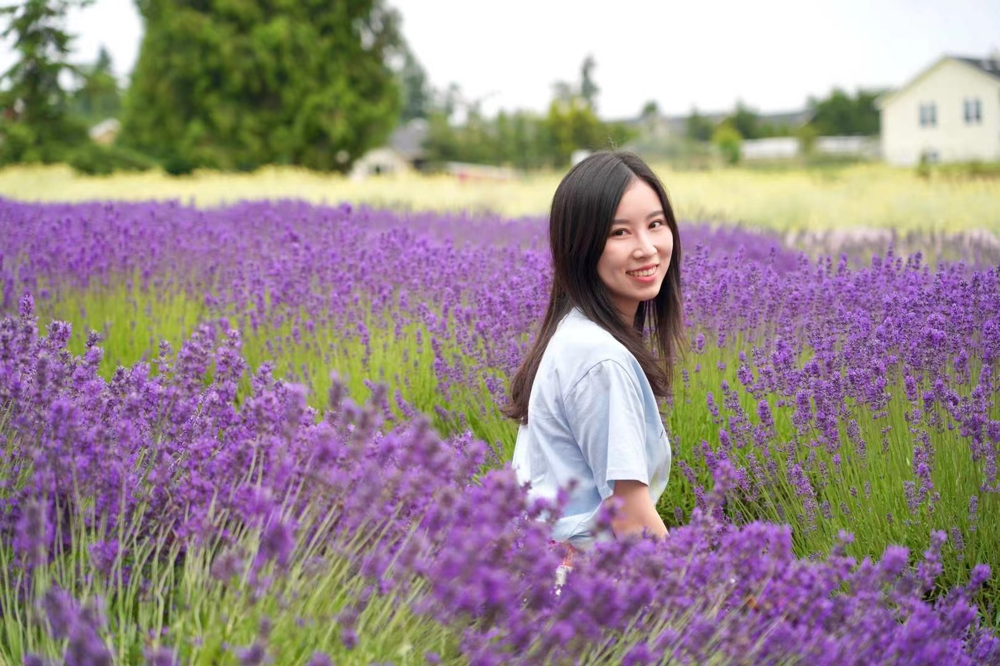

Name: Can Cui
School: Wayne State University
Professional Direction : Web Design
Email: hk2100@wayne.edu
Education And Career Experience
| 2010-2014 | Food Sience and Engineering, Wuhan Institute of Design and sciences | I learned food inspection and food safety and other related knowledge and won scholarships continuously |
| 2014-2016 | Food Sience and Engineering, JiMei University | I published 1 journal article and 3 patents, and served as the vice president of the Student Union |
| 2016-2018 | Yichang Three Gorges Inspection and Testing Center,China | Focus on food product inspection technology and business learning |